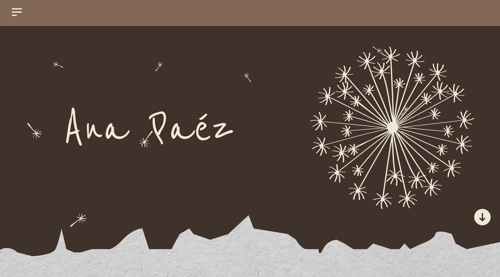
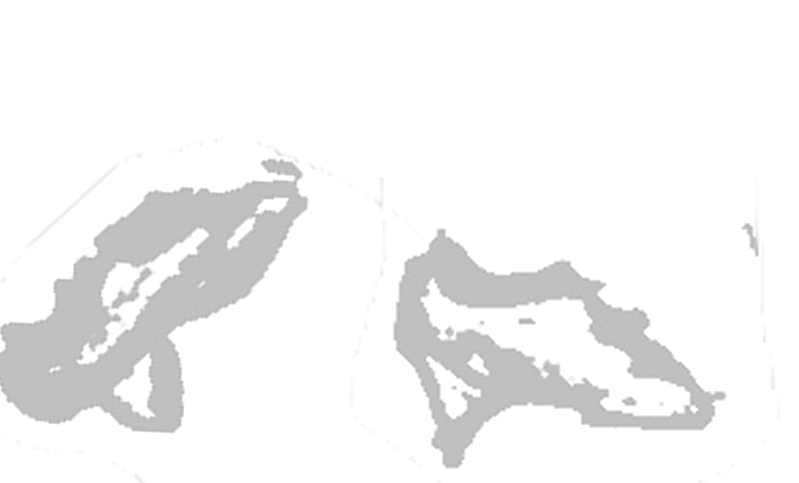
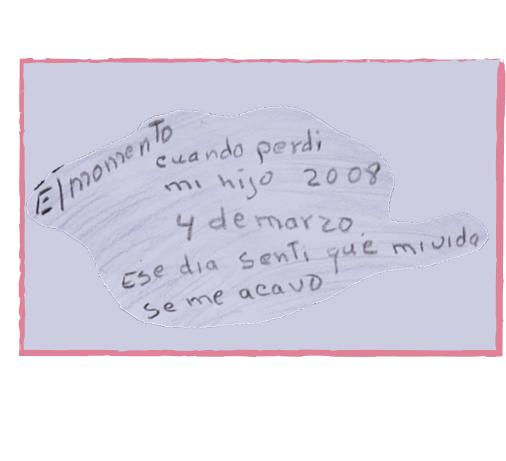

I was born on September 5, 1952, in Sogamoso, Boyacá — right above the cathedral. I grew up in the City of the Sun, a place full of history. There, people still speak of the Muiscas and the Temple of the Sun, which the Spaniards destroyed but that remains alive in memory. My uncles found ancient pieces buried in the ground — figures, pottery, ornaments. With those, they bought mules, cars, and built their homes. It wasn't just old gold; it was part of who we were.

I was born on September 5, 1952, in Sogamoso, Boyacá, right above the cathedral.
I grew up in the City of the Sun, a place with history. There, people still talk about the Muiscas and the Temple of the Sun, which the Spaniards destroyed but that remains alive in memory. My uncles found ancient pieces buried in the ground — figures, pots, ornaments. With those, they bought mules, cars, and built their houses. It wasn’t just old gold; it was part of who we were.
When I was a girl, I lived through the persecution against chicha. It was a forbidden drink, but nobody wanted to stop making it. At the farm, we used to hide it in buried pots so they wouldn't throw it away. We ground sugarcane to make syrup, and corn was in everything. My grandmother even put it in caldo de ojo. From her, I learned to ask permission before planting, to respect the water, and never to play with fire.
With time, I dedicated myself to cooking. Not out of romanticism, but because it was what I knew how to do best. I started selling simple meals, and later opened a restaurant at kilometer 28 on the road to La Mesa. I called it El Zapatazo by chance: one day some foreigners ate there, left happy, and forgot a pair of enormous shoes. I hung them at the entrance, and the name stayed.
Then people started calling it La Arepa Quesuda de la Mona, because of my light hair and the big, cheesy arepas I served. I also made gallina criolla, slow-cooked with potatoes, plantain, cassava, and a guacamole that people asked for by name. They came from far away to eat. Even the mayor used to stop by my table before going to town. I didn’t get rich, but I lived well. I loved the work, the people, seeing the restaurant full. Over time, I opened another business, where I worked with my son Eduardo. He was responsible, serious — didn’t drink or get into trouble. He had been that way since he was a boy.
With time, the place earned another name that filled me with pride: “La Arepa Quesuda de la Mona.” It was because of my blond hair and those generous, cheese-filled arepas I always served hot. People came from far away, and when the mayor visited the town, it was tradition for his first stop to be at my table.
My star dish was gallina criolla, cooked slowly with potato, plantain, cassava, and stuffed, with a guacamole everyone said was heavenly. Customers left saying they had never tasted chicken like that anywhere else, and those words stayed with me as a reward for my effort.
Years later, I had to close the restaurant, but its memory lives on in me and in everyone who sat at my table. Every bite served at El Zapatazo carried a piece of our culture — the love for what is ours and the joy of sharing.
Eduardo was born in Bogotá, at the Clínica Veracruz, on Valentine’s Day, at three in the afternoon. I waited for him with joy, knowing he would change my life. He was the second of my four children, and since he was little, you could tell he was different. He studied at the Mariscal Sucre School, where he graduated as the school’s Brigadier Major. Later, he wanted to study Law. He said he wanted to help people who couldn’t defend themselves — political prisoners, those nobody listened to.
I had a pool business in Villeta, La Rondinela, and he always helped me. Sometimes we worked until late, but he never complained. He was diligent, hardworking, never lazy. I always felt at peace with him.

From that moment on, my life was spent going from one place to another, searching for him; everything was split in two. I remember I began going to church to listen to prophecies, and one day, the preacher told me that my boy was at peace and with God. I gave thanks. It was what I needed to hear after five long months of searching — that my son was finally at peace.

It was seven-thirty in the morning, and Eduardo hadn’t arrived for work; we’d been running another business, a restaurant, for about five years. Eduardo had never been late in his life. We’d said goodbye at two in the morning, and with a kiss, I told him, “Papito, be careful — remember we have to wake up early tomorrow.” Eduardo was never late. A chill ran through my body; I couldn’t calm down — a mother just knows.
That morning, Carolina, one of the girls who worked with me, saw me smoking a cigarette at the restaurant door and asked if I wanted her to read it for me. I said yes. As I smoked and she read the ashes, she saw a cross and told me I should prepare myself because something hard was coming my way. Bad news was on its way.
We had our restaurant at the Police National Road Safety School. That day, I left earlier than ever; I was always the first to arrive and the last to leave, because the former guerrillas came late and we had to feed them.
When I got home, I realized he had been there. The first thing I saw was his photo on the wall; a plate with a pan of fried egg on the table, empty; his graduation ring, the image of the Virgin of Santa Marta with a candle by her side, and the Bible on the table. It was March 4, 2008.
From that day on, my life was spent going from one place to another, searching for him; everything split in two. I remember going to church to listen to prophecy, and one day the preacher told me that my boy was at peace, that he was with God. I gave thanks. That’s all I wanted to know after five months of searching: that my son was at peace.
Five months had passed, and that day I received a cold, harsh call telling me I had to go to the morgue in Bogotá because they might have found my son. I screamed; my little one, Jonathan, screamed with me — that’s why I adore that child, because he was always by my side. I didn’t know what to do; my mind went blank.
My family arrived, but I couldn’t go to the morgue until three in the morning; I had no strength left. When I got there, I thought I’d see him, that they’d show me his body, but they showed him to me on a computer, among other young men. They asked if Eduardo was there, and there he was — my son.
It was August 29, 2008, and Eduardo was in Cimitarra. I didn’t understand why; I kept asking myself “Why?” But I did nothing except take the road to go find my son. When I got there, I remember touching him — he felt like gelatin; when I saw him, I recognized the little padlock he wore as a beard. It was my Eduardo, no doubt about it.
Those were days of hell — so many things happened. We had to exhume my son in a cemetery in Cimitarra. They told me he was a guerrilla, that he had died in combat, but when I saw the file, I learned his boots were on the wrong feet and he had a backpack, a gun, and a grenade. My son never used backpacks. He wasn’t a man of war; he worked with me at the restaurant and was a law student.
When they showed us the camouflage he supposedly wore under his head, it didn’t have the three bullet holes his body had, but it did have blood. They told us they had to burn the coffin to move him to another one. So they incinerated it, and we had to take my son back to Bogotá on my birthday, September 5, 2008. I told him, “Papito, you who brought me serenade last year…”
Those days passed between dream and delirium. I saw myself climbing a mountain with him; he was barefoot, shirtless, I was tired, but he told me I could keep going, that I’d reach the top — but I never did; the summit was too far.
TI had to bury him. Never in my life had a death hurt so much — not even my husband’s, who left me with four small children to raise. Not even that death hurt like Eduardito’s. And my mother — she adored her grandson.
From then on, it was a torment, never understanding what had happened, how it all came to be, why they killed him, who took him. The gravedigger from the town told me that on March 5, the day my son died, they had seen him in Cimitarra, drinking soda with another boy; that an army truck had stopped by and picked them up, and they had gotten in willingly. Later, that man was killed.
At my son’s funeral, a journalist told me to investigate in Soacha — that I might find clues there. So I went to the Soacha Ombudsman’s Office, and they told me other boys had disappeared under similar circumstances. Then I met the wife of the boy who had been with my son — the one they had seen with him drinking soda in Cimitarra.
The Soacha ombudsman helped me take the first steps to file a complaint with the Prosecutor’s Office. He had already warned that boys were disappearing from Soacha, but people said he was crazy. I filed the complaint and decided to leave the case in Bucaramanga.
That’s how I met Luz Marina Bernal, “la Paisa,” and Zoraida — the first mothers who had also lost their sons. That was the beginning of MAFAPO; from that moment, we began this struggle together. I still have the newspaper from Cimitarra that read: “First False Positives Found in Cimitarra.” The scandal had already broken.
The first hearing I attended was with Kelly, the wife of Andrés — the friend who had been killed alongside my son. I had to travel from Bogotá to Bucaramanga — many times without a single peso. During that first hearing, I sometimes had to sleep in the main square because I couldn’t afford a hotel; I had lost my restaurant. From the moment my son disappeared, my life stopped. I could no longer work. I dedicated myself to finding the truth about what had happened — it became a full-time job.
One day, in the San Cristóbal neighborhood in Bogotá, a woman told me she had seen my son’s body in Cimitarra. She was from there and had been living there when it all happened. We met at a victims’ gathering, and she said she had seen him. She told me she had heard about a recruiter who had taken young men to the army — he was paid for each one.
I must say, though, that along the way there were also very good people. Some lawyers from an NGO helped us a lot; they always stood by us in every hearing since 2008. We mothers began organizing ourselves to fight for our sons. Many congressmen and journalists had already used us, but no one truly helped us find our boys. We officially registered the organization in 2016 — after nine long years of going back and forth without being able to resolve anything.
I once had to go up with the Sijín, around two in the morning, to identify the place where my son had been executed. They carried out the full reconstruction of the event; I learned that my son hadn’t been killed there — that was only where they had buried him. I took some of the soil from that mountain.
The mothers accompanied me to many of the hearings. On the day of the final hearing, an informant identified those responsible; they pointed out the people who had killed in the photographs. They pointed to my son and another young man and said, “These are mine.” I thought, “Yours? Damn you.”
The beautiful thing about that day was that, in the main square of Bucaramanga, there were about 3,000 victims standing with me. The same square where I had once slept out in the open was now filled with white balloons.
My reward was proving that my son was not a guerrilla. The guilty received up to 28 years in prison. There were eight army officers involved: a colonel, a sergeant, professional soldiers, and others of lower rank.
Then came the peace process, and with it, the Truth Commission and the JEP. I was glad that the Truth Commission managed to reconstruct some of what had happened. My son had been at the bus terminal; they found the ticket in his name. I learned that those responsible had deceived justice in many ways. The Commission helped clarify some facts, but I never managed to know the whole story.
The perpetrators did not serve the sentence they had received in ordinary justice — only four years, because they submitted to the JEP. It felt like starting all over again: five years had passed in the ordinary courts, and 18 hearings. It was unbelievable to me. The Commission had promised us the truth, but sadly, it was never possible to have it complete. I didn’t agree with them being released, but I held onto the hope of at least knowing the truth.
Later, my lawyer informed me that the perpetrators had been released. And now they tell me that, since my subcase hasn’t been reached yet, there haven’t been hearings about my case. I want the JEP to show me those people. Who am I supposed to forgive? My hearing will be on October 28 and 29, 2025, in Cúcuta. We will have to face each other, and they will have to ask for my forgiveness.
I say: where is the reparation for us? That’s what I’m fighting for now — to have a dignified life and a dignified death. I want to feel that my struggle was worth it, even though I know the country recognizes it.
My strength today comes from the youth who have never left us alone: students, young people from universities and schools, whose hugs bring us hope. They are the proof that our fight has not been in vain. I will keep demanding reparation with dignity — that we may live and die knowing it was worth not giving up. That this country may recognize, not only in words but in actions, that our lives matter, and that truth and justice are not negotiable.
Even today, I feel the call of what I call a mother’s ache — that strange tenderness that stays in the body after giving life, as if my womb still carried the memory of cravings and sensations from pregnancy. It’s a love that never fades, a sensitivity that also shows through in the way I cook. For me, cooking is an extension of that care: every dish carries the tenderness, the energy, and the strength of the life I once held inside me. Feeding becomes a sacred act, a bridge between the deepest part of my body and the community around me. Cooking awakens my soul; it takes me back to other times and other places. I love doing it in community — in those big pots where sharing and love blend with the aroma of food. Because, in the end, I know it’s love that moves us, that weaves an unbreakable bond between mothers and their children. Cooking has connected me to my story and to other women who, like me, have walked through pain and resistance. I remember the community pot we made in (date and place): there, I cooked sancocho, my favorite dish, as a tribute to the memory of those we’ve lost and as a gesture of hope for justice and truth. That day, several victims gathered to cook together. We did it to honor, to demand, to make sure it never happens again — to face the perpetrators and demand truth with the dignity we deserve. In that fire, and in those hands, cooking in community became an act of resistance — a sacred gesture that sustained us and gave us strength to go on.